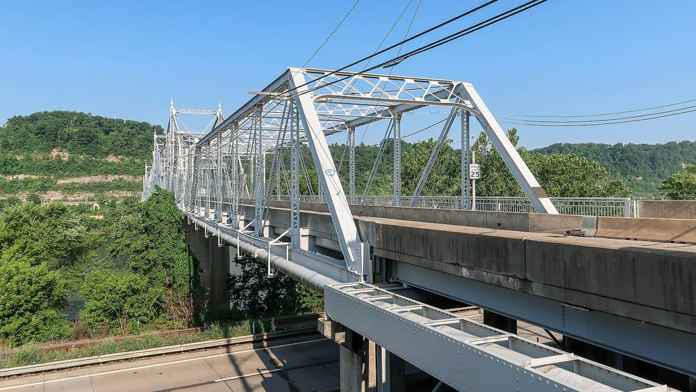

미국 펜실베이니아 앰브리지 보로, 비영리 3곳 돕는 'RISE' 사업으로 지붕 태양광…11월 5일 가동식

연방 에너지부 농촌 공동체 상금으로 시작한 2년 사업의 두 번째 설비…시공 업체 "25년 동안 납세자 부담 약 50만9,000달러 줄어" 추정
미국 펜실베이니아주 비버카운티의 자치구인 앰브리지 보로가 새로 설치한 지붕 태양광의 가동식을 11월 5일 오후 1시부터 2시까지 앰브리지 600 Eleventh Street에서 연다. 가동식에는 롭 마치(Rob Matzie) 주 하원의원과 지역 인사들이 참석한다. 이 설비는 비영리단체 New Sun Rising·RiverWise·The PA Solar Center가 비버카운티 공동체의 태양광 보급을 앞당기려고 함께 꾸린 'RISE(Rural Innovation through Solar Empowerment)' 사업의 도움으로 들어섰으며, RISE는 미국 에너지부 '농촌 공동체 에너지 상(Energizing Rural Communities Prize)' 상금으로 2년 사업으로 시작했다. 앰브리지 설비는 올해 7월 비버폴스의 어린이 박물관에 들어선 체험형 태양광 시연 설비에 이어 RISE의 두 번째 가동 설비다. 시공은 EIS Solar가 맡았고 설치비 일부는 '환경 피해 완화 공동체 기금(Environmental Mitigation Community Fund)' 보조금으로 댔으며, EIS Solar는 이 설비가 앞으로 25년 동안 앰브리지 납세자의 부담을 약 50만9,000달러 줄일 것으로 추정했다. 설비 용량과 총사업비, 보조금 액수는 알려지지 않았다.
시민에너지 관점
네덜란드는 2014년 '우편번호 장미(postcoderoos)' 제도를 도입해, 같은 우편번호나 맞닿은 동네 주민이 협동조합을 꾸려 가까운 지붕의 태양광에 출자하면 그 몫만큼 전기요금의 에너지세를 깎아 주었고, 자기 지붕이 없는 주민도 동네 지붕 발전소의 주인이 될 수 있었다. 앰브리지처럼 비영리단체가 작은 자치구를 도와 공공건물 지붕에 태양광을 올리면 절감액은 세금 부담을 덜어 주지만, 주민이 직접 발전소에 참여하는 길은 열리지 않는다. 작은 자치구가 주민 출자까지 관리하기는 벅차다는 걱정이 있지만, 바로 그 일을 이미 사업을 돕고 있는 비영리 중간지원조직이 맡으면 행정 부담 없이 주민 몫을 만들 수 있다. 우리도 마을 공공건물 지붕 태양광을 지원할 때 중간지원조직이 주민 출자 협동조합 설립까지 돕도록 지원 조건에 넣어야 한다.
출처: Beaver County Radio 2026-11-02 노아 해즈웰(Noah Haswell) 원문 보기
米ペンシルベニア州アンブリッジ・バラ、非営利3団体が支える「RISE」事業で屋根上太陽光…11月5日に稼働式
連邦エネルギー省の農村コミュニティ賞の賞金で始まった2年事業の2基目…施工業者「25年間で納税者負担を約50万9,000ドル軽減」と推計
米ペンシルベニア州ビーバー郡の自治区アンブリッジ・バラが、新たに設置した屋根上太陽光の稼働式を11月5日午後1時から2時まで、アンブリッジの600 Eleventh Streetで開く。稼働式にはロブ・マッツィー（Rob Matzie）州下院議員や地域の関係者が出席する。この設備は、非営利団体のNew Sun Rising、RiverWise、The PA Solar Centerがビーバー郡のコミュニティで太陽光の普及を早めるために共同で立ち上げた「RISE（Rural Innovation through Solar Empowerment）」事業の支援で設置されたもので、RISEは米エネルギー省の「農村コミュニティ・エネルギー賞（Energizing Rural Communities Prize）」の賞金をもとに2年間の事業として始まった。アンブリッジの設備は、今年7月にビーバーフォールズの子ども博物館に設けられた体験型の太陽光デモ設備に続き、RISEで2番目に稼働する設備となる。施工はEIS Solarが担い、設置費の一部は「環境被害緩和コミュニティ基金（Environmental Mitigation Community Fund）」の補助金で賄われ、EIS Solarはこの設備が今後25年間でアンブリッジの納税者負担を約50万9,000ドル減らすと推計した。設備容量や総事業費、補助金の額は明らかにされていない。
市民エネルギーの視点
オランダは2014年に「郵便番号のバラ（postcoderoos）」制度を導入し、同じ郵便番号や隣接地区の住民が協同組合をつくって近くの屋根の太陽光に出資すれば、その分だけ電気料金のエネルギー税を軽減した。自分の屋根を持たない住民も、地域の屋根発電所の持ち主になることができた。アンブリッジのように非営利団体が小さな自治区を支えて公共施設の屋根に太陽光を載せれば、節約分は税負担を軽くするが、住民が発電所に直接参加する道は開かれない。小さな自治区が住民出資の管理まで担うのは荷が重いとの懸念もあるが、すでに事業を支えている非営利の中間支援組織がその役割を担えば、行政の負担なしに住民の持ち分をつくることができる。韓国でも、地域の公共施設の屋根に太陽光を支援する際には、中間支援組織が住民出資の協同組合の設立まで手伝うことを支援条件に盛り込むべきだ。
出典: ビーバー・カウンティ・ラジオ（Beaver County Radio） 2026-11-02 ノア・ハズウェル（Noah Haswell） 原文を読む
美国宾夕法尼亚州安布里奇自治市借助三家非营利机构的“RISE”项目建成屋顶光伏…11月5日举行启用仪式
以联邦能源部农村社区奖金启动的两年期项目的第二个设施…施工企业估计“25年可为纳税人减负约50.9万美元”
美国宾夕法尼亚州比弗县的自治市安布里奇（Ambridge Borough）将于11月5日下午1点至2点，在安布里奇600 Eleventh Street为新装的屋顶光伏举行启用仪式。州众议员罗布·马齐（Rob Matzie）和地方人士将出席。该设施是在“RISE（Rural Innovation through Solar Empowerment）”项目的帮助下建成的；RISE由非营利机构New Sun Rising、RiverWise和The PA Solar Center共同发起，旨在加快比弗县各社区推广光伏，最初以美国能源部“农村社区能源奖（Energizing Rural Communities Prize）”的奖金作为两年期项目启动。继今年7月在比弗福尔斯一家儿童博物馆投用的互动式光伏示范设施之后，安布里奇的设施是RISE第二个投入运行的项目。施工由EIS Solar承担，部分安装费用来自“环境损害缓解社区基金（Environmental Mitigation Community Fund）”的补助；EIS Solar估计，该设施今后25年可为安布里奇纳税人减轻约50.9万美元负担。装机容量、总投资和补助金额均未公布。
市民能源视角
荷兰2014年推出“邮编玫瑰（postcoderoos）”制度：同一邮编或相邻地区的居民组建合作社、入股附近屋顶上的光伏，就可按所占份额减免电费中的能源税，没有自家屋顶的居民也能成为社区屋顶电站的主人。像安布里奇这样由非营利机构协助小型自治市在公共建筑屋顶装光伏，节省的钱可以减轻税负，却没有为居民打开直接参与电站的通道。有人担心小型自治市难以承担管理居民入股的工作，但如果由已经在协助项目的非营利中介支持机构承担这一角色，就能在不增加行政负担的情况下为居民留出份额。韩国在支持社区公共建筑屋顶光伏时，也应把“中介支持机构协助成立居民入股合作社”写进支持条件。
来源: 比弗县电台（Beaver County Radio） 2026-11-02 诺亚·哈斯韦尔（Noah Haswell） 查看原文
Ambridge Borough in Pennsylvania to switch on rooftop solar built with help from three nonprofits' RISE project on Nov. 5
Second installation from a two-year project started with a federal Energy Department rural communities prize; installer estimates about $509,000 in taxpayer savings over 25 years
Ambridge Borough in Beaver County, Pennsylvania, will hold a ceremony to switch on its new rooftop solar system at 600 Eleventh Street in Ambridge from 1 p.m. to 2 p.m. on Nov. 5, with State Representative Rob Matzie and other community leaders attending. The system was made possible by the Rural Innovation through Solar Empowerment (RISE) project, a partnership of the nonprofits New Sun Rising, RiverWise and The PA Solar Center to speed up solar adoption in communities across Beaver County, which began as a two-year initiative funded by the U.S. Department of Energy's Energizing Rural Communities Prize. Ambridge's installation is the second RISE project to come online, after an interactive solar demonstration system at a children's museum in Beaver Falls that started operating in July. EIS Solar installed the system, part of which was paid for with an Environmental Mitigation Community Fund grant, and the installer estimates it will save Ambridge taxpayers about $509,000 over the next 25 years. The system's capacity, total cost and grant amount were not disclosed.
Citizen Energy View
In 2014 the Netherlands introduced the "postcode rose" (postcoderoos) scheme, which cut the energy tax on electricity bills for residents of the same or neighbouring postcodes who formed a cooperative and invested in solar on a nearby roof, so that people without a roof of their own could still co-own a local rooftop plant. When nonprofits help a small borough put solar on a public roof, as in Ambridge, the savings ease the tax burden, but residents get no direct way into the plant itself. Some worry a small borough cannot manage residents' investment on top of everything else, but the nonprofit intermediaries already supporting the project can take on that job and create a residents' share without adding to the borough's workload. Korea, too, should make it a condition of support for rooftop solar on local public buildings that intermediary organisations help residents set up an investment cooperative.
Source: Beaver County Radio 2026-11-02 Noah Haswell Read the original